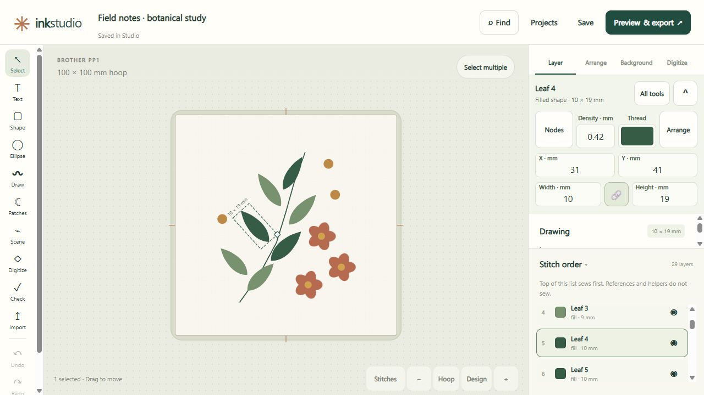
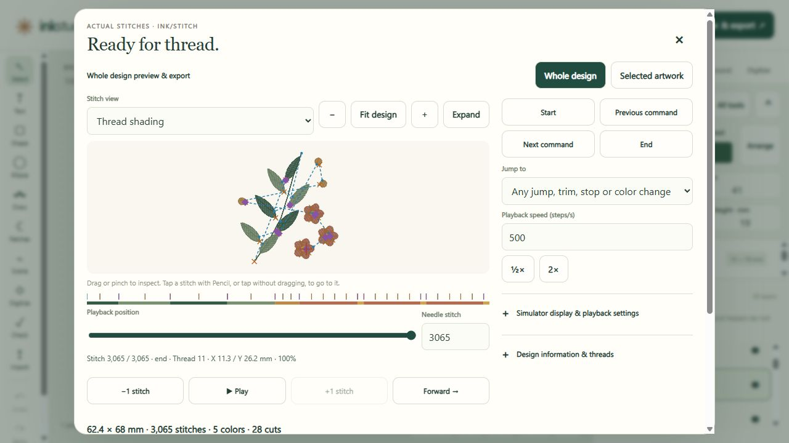
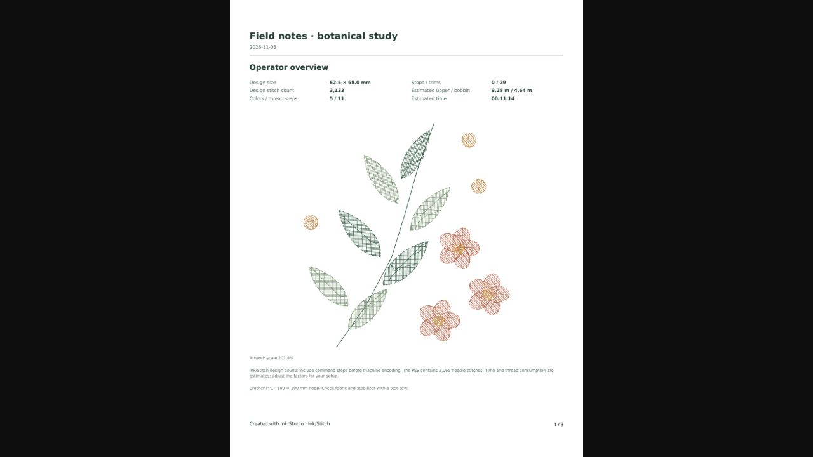

01 / MAKE IT YOURS
A place for your ideas.
Draw shapes and paths, import SVG artwork, trace images, or add embroidery lettering. Arrange layers and choose your thread colors.
FREE & OPEN SOURCE · MADE FOR MAKING
Your ideas, one stitch closer.
Draw, add lettering, and turn artwork into embroidery with a friendly companion to Inkscape and Ink/Stitch.
Explore this page without installing a thing.

A LOOK INSIDE
Real screenshots, from the same sample design.
Select an image to take a closer look.
01 / MAKE IT YOURS
Draw shapes and paths, import SVG artwork, trace images, or add embroidery lettering. Arrange layers and choose your thread colors.

02 / SEE HOW IT SEWS
Inspect generated stitches with thread shading or needle paths. Play through the sequence and check the design before exporting a machine file.

03 / TAKE IT TO THE MACHINE
Export PES and other supported embroidery formats. Prepare PDF worksheets and thread lists, and save an editable project backup for the next idea.
A LITTLE HANDS-ON
This botanical sample was made in Ink Studio and exported through Ink/Stitch. These are the stitch segments read back from its PES file.
Press play, or move the slider to explore the sewing order.
A software preview, with physical sew-out still to be tested. This replay shows a prepared sample; creating and exporting designs uses the installed app.
A real stitch preview. No installation needed.
WHEN YOU'RE READY
Ink Studio runs on your computer and opens its editor in your browser. Your project files stay on your machine.
See the setup instructions for requirements and troubleshooting.
This is a visual tour with a prepared stitch replay. Install Ink Studio, Inkscape, and Ink/Stitch to create designs and generate embroidery files. GitHub Pages serves the tour as static files.
Yes. Ink Studio is free and open source under GPL-3.0-or-later. You can inspect the code, build it yourself, and contribute improvements.
Ink Studio is an independent companion. It uses your installed Inkscape and Ink/Stitch tools. Visit Inkscape and Ink/Stitch to learn about those projects.